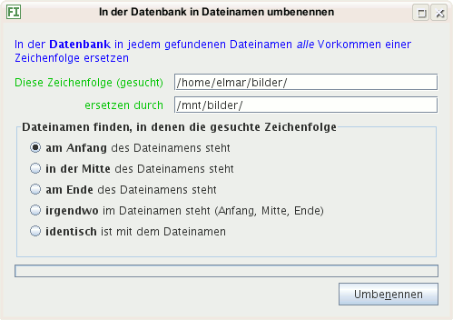

Dieser Menübefehl öffnet einen Dialog mit dessen Hilfe Sie Dateinamen in der Datenbank umbenennen können.
Sollten Sie die Bilder verschoben haben oder befinden diese sich nun auf einem Laufwerk mit anderem Buchstaben, können Sie so schnell die Dateinamen anpassen.
Hier geben Sie ein, was sich änderte:
C:
auf D:, geben Sie C: ein
/Alter Name/
unter Linux und \Alter Name\ unter Windows
Hier geben Sie ein, wie die Ersatz-Zeichenfolge lautet:
C:
auf D:, geben Sie D: ein
/Neuer Name/
unter Linux und \Neuer Name\ unter Windows
Hier schränken Sie ein, in welchen Dateinamen ersetzt wird:
img nach Bilder.
tiff nach
tif (mit einem "f").
/Daten/Bilder/Egon/Bilder nach
/Daten/Images/Egon/Images.
Tipp: Sichern Sie die Datenbankdateien vorher; kopieren Sie diese beispielsweise in einen weiteren Ordner, während das Programm JPhotoTagger nicht gestartet ist. So können Sie bei unerwünschten Ergebnissen die Kopien in den Datenbankordner zurückkopieren (während das Programm JPhotoTagger nicht gestartet ist) und das Umbenennen mit anderen Eingaben wiederholen.
Solange die Dateien umbenannt werden, können Sie nicht
weiter arbeiten mit dem Programm JPhotoTagger. Das
Umbenennen sollte schnell erledigt sein. Auf meinem 5 Jahre alten
Rechner dauerte das Umbenennen von mehr als 15.000 Bildern etwa
1 Sekunde mit den Eingaben, die unten abgebildet sind
(/home/elmar/bilder/ wurde ersetzt durch
/mnt/bilder/).
